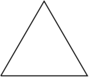
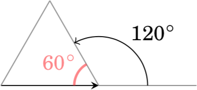
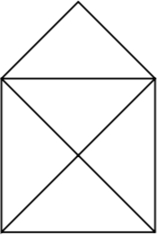
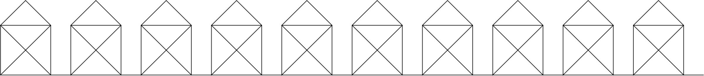
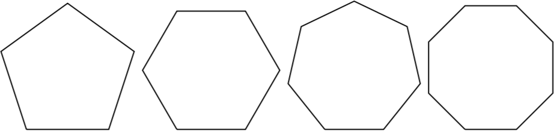
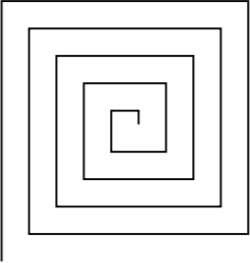
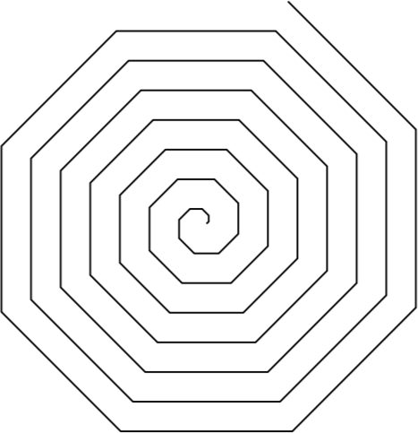
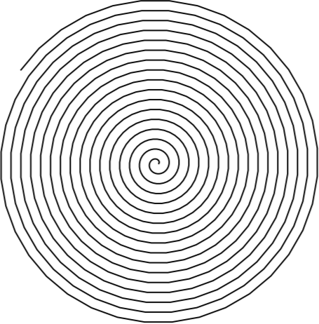
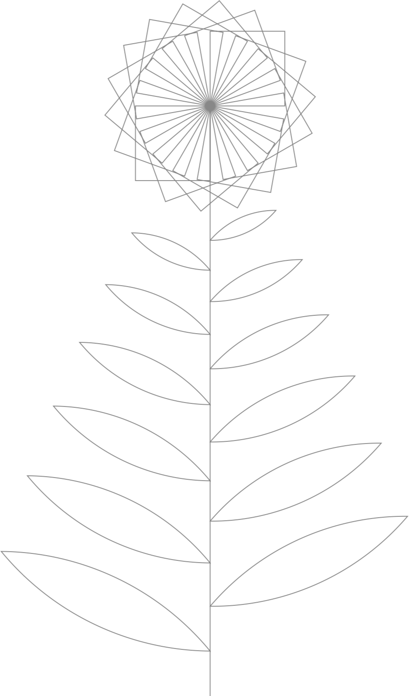

V těchto projektech je určitě něco nového. Nezadávají postup, jak na odpověď přijít, ale to určitě zvládneš!
Co vrací funkce range?
Co se stane, když pro příkaz for
zavoláš funkci range se dvěma parametry?
Se třemi?
Želví kreslení! Tahle sekce tě naučí myslet jako programátorka počítačové grafiky. Je dobré jednotlivé projekty dělat postupně, a když něco začne fungovat, znovu si řešení projít a zamyslet se nad ním.
Nakresli trojúhelník.

Poznámka: Rovnostranný trojúhelník má vnitřní úhly 60°. Želva se ale otáčí o vedlejší úhel 180 - 60 = 120°.

Nakresli domeček!

Jak pravil Pythagoras, délka šikmé čáry v domečku je √2-krát délka stěny. O funkci na odmocninu jsme mluvili na srazu.
Nakresli vesnici!

Nakresli pětiúhelník, šestiúhelník, sedmiúhelník, osmiúhelník.

Vnitřní úhel pravidelného n-úhelníka má 180 × (1 - 2/n) stupňů.
Aby byly tvary zhruba stejně veliké, použij pro n-úhelník délku strany např. 200/n
Nakresli n-úhelník, kde n zadá uživatel.
Želva umí jen rovné čáry. Jde pomocí rovných čar nakreslit kolečko?
Nevíš-li, přeskoč na další projekt a pak se sem vrať.
Nakresli pětadevadesátiúhelník.
Nakresli takovýto ornament:

Nevíš-li si rady, vezmi pravítko a změř délky jednotlivých čar. Doporučuju začít od středu.
Nakresli takovýto ornament:

Nakresli spirálu.

Od ornamentů ke spirále se dostaneš stejným způsobem jako od n-úhelníků ke kolečku.
Napiš obrázek! Třeba les ze stromů, město z domů, nebe z hvězd, dav ze smajlíků, hradbu z věží, zikkurat ze schodů, ...
Můžeš použít i nějakou z funkcí modulu random.
Další projekty jsou pro opravdové grafické mistryně. Nepouštěj se do nich, dokud nemáš hotové ostatní projekty. Nedostaneš-li se k nim, nevadí
Na sraze jsme nakreslili tři čtverce, každý otočený o 20°. Nakresli 18 takových čtverců.
Vezmi program z minulé úlohy a dokresli stonek a listy.
Je jenom na tobě, jaký budou mít tvar.
Piš komentáře a snaž se opakovat pomocí for,
ne pomocí Ctrl+C Ctrl+V.

A až tě omrzí grafika, zkus zase naprogramovat něco v textovém režimu.
Napiš program, který postupně načte od uživatele dvě čísla a jednoznakový
řetězec – buď '+', '-', '*' nebo '/'. Program provede na číslech příslušnou operaci.
Příklad použití programu:
První číslo: 123
Druhé číslo: 456
Operace: +
123 + 456 = 579Napiš program, který se pětkrát zeptá na číslo a nejmenší zadané číslo vypíše.
Nevíš-li si rady, podívej se do materiálů na sekci Přepisování proměnných. Místo sečítání budeš vybírat správnou hodnotu.